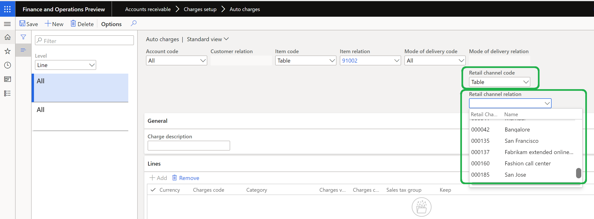
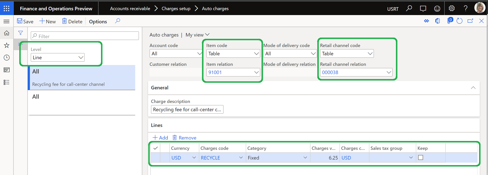
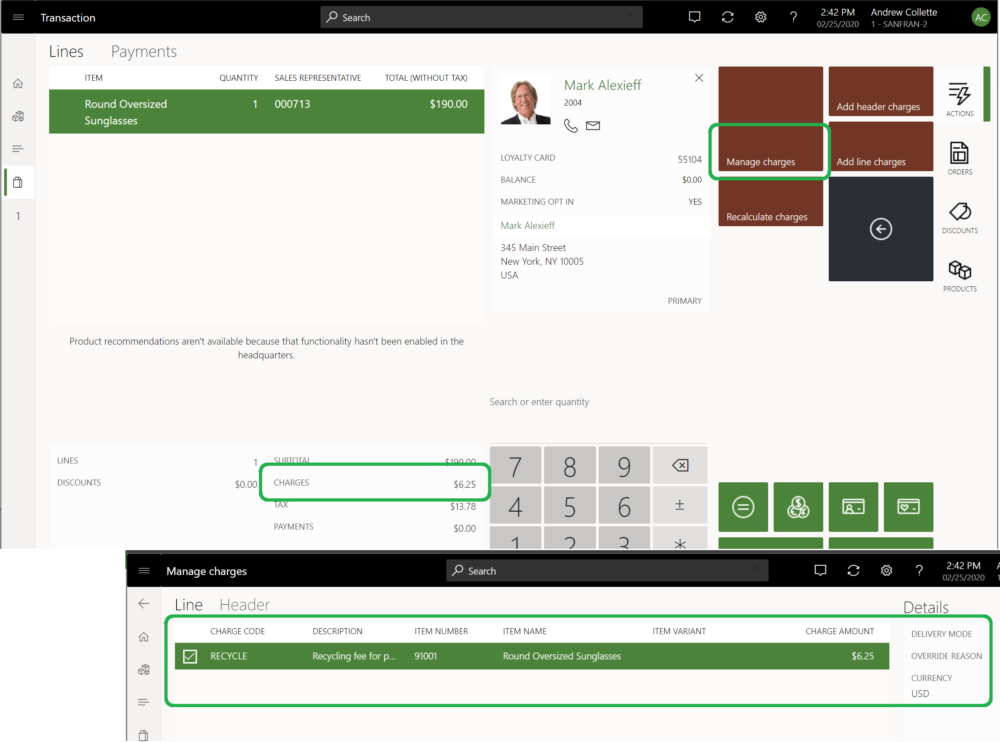

Automatische Belastungen nach Kanal aktivieren und konfigurieren
In diesem Thema wird erläutert, wie Sie automatische Gebühren nach Kanal in Microsoft Dynamics 365 Commerce aktivieren und auch konfigurieren.
Übersicht
Möglicherweise gibt es Szenarien, in denen Recyclinggebühren oder andere Gebühren auf eine Gruppe von Produkten erhoben werden müssen, die in allen oder einigen Geschäften in einem bestimmten Bundesstaat (z. B. Kalifornien) verkauft werden. Die Funktion Aktivieren Sie die automatische Filterladung nach Kanal in Commerce lässt Sie automatische Gebühren nach Kanal festlegen (z. B. einen bestimmten stationären Kanal). Diese Funktion wird in Dynamics 365 Commerce Version 10.0.10 und höher verfügbar.
Um automatische Gebühren nach Kanal zu aktivieren und zu konfigurieren, müssen Sie die folgenden Aufgaben ausführen:
- Aktivieren Sie Aktivieren Sie die automatische Filterladung nach Kanal.
- Konfigurieren Sie die Organisationshierarchiezwecke.
- Definieren Sie automatische Gebühren nach Kanal.
Note
Die Funktion Aktivieren Sie die automatische Filterladung nach Kanal funktioniert nur, wenn die erweiterte Funktion zum automatischen Laden ebenfalls aktiviert ist. Informationen zum Aktivieren der erweiterten Funktion für automatische Gebühren finden Sie unter Erweiterte automatische Omni-Channel-Gebühren.
Starten Sie Aktivieren Sie die automatische Filterladung nach Kanal
Führen Sie die folgenden Schritte aus, um automatische Gebühren nach Kanal in Commerce zu aktivieren.
- Wechseln Sie zu Systemverwaltung > Arbeitsbereiche > Datenverwaltung.
- Auf der Registerkarte Nicht aktiviert in der Liste Funktionsname finden und wählen Sei Aktivieren Sie die automatische Filterladung nach Kanal.
- Wählen Sie in der unteren rechten Ecke Jetzt aktivieren. Nachdem die Funktion aktiviert wurde, wird sie in der Liste auf der Registerkarte Alle angezeigt.
- Gehen Sie zu Retail and Commerce > Retail and Commerce IT > Vertriebsplan.
- Suchen und wählen Sie im linken Bereich den Auftrag 1110 ( Globale Konfiguration).
- Wählen Sie im Aktionsbereich jetzt ausführen, um die Konfigurationsänderungen zu verbreiten.
Warning
Wenn Sie die Funktion Aktivieren Sie die automatische Filterladung nach Kanal ausschalten, nachdem Sie sie bereits verwendet haben, wird das Feld unter Einzelhandelskanalbeziehung unter Automatische Aufladung nicht mehr angezeigt und Sie verlieren alle vorhandenen Konfigurationen. Wenn die Entfernung der Konfiguration Einzelhandelskanalbeziehung die Regeln für automatische Gebühren dupliziert, schlägt der Versuch zur Deaktivierung fehl. Überprüfen Sie vor dem Deaktivieren der Funktion unbedingt alle Regeln für automatische Gebühren und nehmen Sie die erforderlichen Änderungen vor.
Konfigurieren Sie die Organisationshierarchiezwecke
Ein neuer Zweck der Organisationshierarchie, der Automatische Gebühr für den Einzelhandel benannt wird, wurde erstellt, um die Hierarchie für automatische Gebühren nach Kanal zu verwalten.
Führen Sie die folgenden Schritte aus, um einem Organisationshierarchiezweck in Commerce eine Standardhierarchie zuzuweisen.
- Wechseln Sie zu Organisationsverwaltung > Organisationen > Organisationshierarchiezwecke.
- Wählen Sie im linken Bereich Automatische Gebühr für den Einzelhandel aus.
- Unter Zugeordnete Hierarchien wählen Sie Hinzufügen.
- In dem Dialogfeld Organisationshierarchien wählen Sie im Dialogfeld eine Organisationshierarchie aus (z. B. Einzelhandelsgeschäfte nach Regionen) und wählen Sie dann OK.
- Unter Zugeordnete Hierarchien wählen Sie Als Standard festlegen.
- Gehen Sie zu Retail and Commerce > Retail and Commerce IT > Vertriebsplan.
- Suchen und wählen Sie im linken Bereich den Auftrag 1040 (Produkte).
- Wählen Sie im Aktivitätsbereich Jetzt ausführen aus.
- Wiederholen Sie die beiden vorherigen Schritte, um Aufträge 1070 (Kanalkonfiguration) und 1110 (Globale Konfiguration) auszuführen.

Definieren Sie automatische Gebühren nach Kanal
Nachdem Sie die Funktion Aktivieren Sie die automatische Filterladung nach Kanal aktiviert und den Organisationshierarchiezweck Automatische Belastung für den Einzelhandel konfiguriert haben, können automatische Gebühren nach Kanal entweder auf der Ebene der Auftragskopfzeilen oder auf der Ebene der Auftragspositionen definiert werden.
Führen Sie die folgenden Schritte aus, um automatische Gebühren nach Kanal in Commerce zu definieren.
Gehen Sie zu Debitoren > Belastungen einrichten > Auto-Belastungen.
Im linken Bereich im Feld Ebene wählen Sie entweder Kopf oder Linie aus, abhängig von Ihren Geschäftsanforderungen.
In dem Feld Retail Channel-Code wählen Sie im Feld den entsprechenden Kanalcode aus (z. B. Tabelle oder Gruppe). Wenn die Standardeinstellung, Alle verwendet wird, werden Gebührenregeln auf alle Kanäle angewendet.
- Wenn Sie Gruppe auswählen, stellen Sie sicher, dass eine Gebührengruppe für Einzelhandelskanäle unter Einzelhandel und Handel > Kanaleinrichtung > Gebühren > Gebührengruppen für Einzelhandelskanäle erstellt wird.
- Wenn Sie Tabelle auswählen, können Sie einen bestimmten Kanal auswählen (z. B. San Francisco) in dem Feld Einzelhandelskanalbeziehung.
Gehen Sie zu Retail and Commerce > Retail and Commerce IT > Vertriebsplan.
Suchen und wählen Sie im linken Bereich den Auftrag 1040 (Produkte).
Wählen Sie im Aktivitätsbereich Jetzt ausführen aus.
Wiederholen Sie die beiden vorherigen Schritte, um Aufträge 1070 (Kanalkonfiguration) und 1110 (Globale Konfiguration) auszuführen.

Beispielszenario
Im folgenden Beispiel werden die Schritte beschrieben, die zum Konfigurieren eines Produkts erforderlich sind, damit beim Verkauf des Produkts über einen stationären Kanal in San Francisco Recyclinggebühren erhoben werden. Das Beispiel zeigt auch, wie die automatischen Gebühren in der POS-Anwendung (Commerce Point of Sale) angezeigt werden.
Die Organisation definiert einen Gebührencode, der RECYCELN benannt wird, wie in der folgenden Abbildung gezeigt.

Eine automatische Belastung wird auf Positionsebene erstellt. Es weist die folgenden Konfigurationen auf:
- Das Feld Kontocode ist festgelegt auf Alle festgelegt.
- Das Feld Artikelcode ist auf Tabelle festgelegt.
- Das Feld Artikelbeziehung ist auf Produkt-ID 91001 festgelegt.
- Das Feld Lieferungscode-Modus ist auf Alle festgelegt.
- Das Feld Retail Channel Code ist auf Tabelle festgelegt.
- Das Feld Retail Channel Beziehung ist auf Geschäft San Francisco festgelegt.
Eine automatische Gebührenzeile wird erstellt. Es weist die folgenden Konfigurationen auf:
- Das Feld Währung wird mit auf USD festgelegt.
- Das Feld Belstungscode ist auf RECYCLE festgelegt.
- Das Feld Kategorie ist auf Fest festgelegt.
- Das Feld Belastung wird mit auf $6.25 festgelegt.

In der POS-Anwendung wird ein Auftrag im Shopkanal San Francisco erstellt. Die Position Belastungen zeigen die Recyclinggebühr von 6,25 $.
Durch die Auswahl von Transaktionsoptionen > Gebühren > Gebühren verwalten in der POS-Anwendung können Sie den Gebührencode und die Beschreibung der Recyclinggebühr anzeigen.

Zusätzliche Ressourcen
Erweiterte automatische Omni-Channel-Belastungen
Kopfbelastungen auf übereinstimmende Verkaufspositionen aufteilen